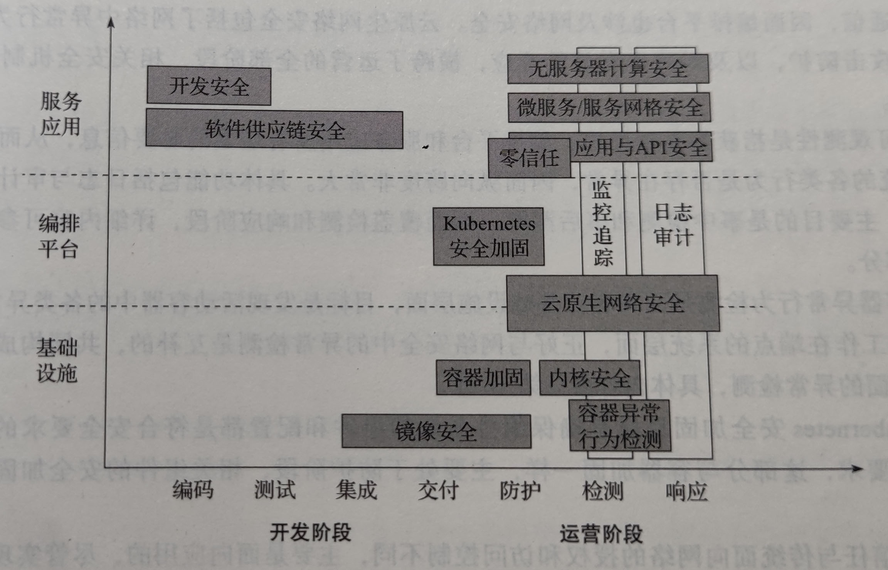

<!DOCTYPE html>


<html lang="zh-CN">
  

    <head>
      <meta charset="utf-8" />
        
      <meta
        name="viewport"
        content="width=device-width, initial-scale=1, maximum-scale=1"
      />
      <title>云原生安全-攻防实践与体系构建 |  墨冰的博客</title>
  <meta name="generator" content="hexo-theme-ayer">
      
      <link rel="shortcut icon" href="/favicon.ico" />
       
<link rel="stylesheet" href="/dist/main.css">

      <link
        rel="stylesheet"
        href="https://cdn.jsdelivr.net/gh/Shen-Yu/cdn/css/remixicon.min.css"
      />
      
<link rel="stylesheet" href="/css/custom.css">
 
      <script src="https://cdn.jsdelivr.net/npm/pace-js@1.0.2/pace.min.js"></script>
       
 

      <link
        rel="stylesheet"
        href="https://cdn.jsdelivr.net/npm/@sweetalert2/theme-bulma@5.0.1/bulma.min.css"
      />
      <script src="https://cdn.jsdelivr.net/npm/sweetalert2@11.0.19/dist/sweetalert2.min.js"></script>

      <!-- mermaid -->
      
      <style>
        .swal2-styled.swal2-confirm {
          font-size: 1.6rem;
        }
      </style>
    <link href="https://cdn.bootcss.com/KaTeX/0.11.1/katex.min.css" rel="stylesheet" /></head>
  </html>
</html>


<body>
  <div id="app">
    
      
    <main class="content on">
      <section class="outer">
  <article
  id="post-云原生安全-攻防实践与体系构建"
  class="article article-type-post"
  itemscope
  itemprop="blogPost"
  data-scroll-reveal
>
  <div class="article-inner">
    
    <header class="article-header">
       
<h1 class="article-title sea-center" style="border-left:0" itemprop="name">
  云原生安全-攻防实践与体系构建
</h1>
 

      
    </header>
     
    <div class="article-meta">
      <a href="/2021/11/11/%E4%BA%91%E5%8E%9F%E7%94%9F%E5%AE%89%E5%85%A8-%E6%94%BB%E9%98%B2%E5%AE%9E%E8%B7%B5%E4%B8%8E%E4%BD%93%E7%B3%BB%E6%9E%84%E5%BB%BA/" class="article-date">
  <time datetime="2021-11-11T03:11:11.000Z" itemprop="datePublished">2021-11-11</time>
</a> 
  <div class="article-category">
    <a class="article-category-link" href="/categories/%E9%95%BF%E5%89%91%E8%90%BD%E6%9C%88%E5%85%89/">长剑落月光</a>
  </div>
  
<div class="word_count">
    <span class="post-time">
        <span class="post-meta-item-icon">
            <i class="ri-quill-pen-line"></i>
            <span class="post-meta-item-text"> 字数统计:</span>
            <span class="post-count">14.3k</span>
        </span>
    </span>

    <span class="post-time">
        &nbsp; | &nbsp;
        <span class="post-meta-item-icon">
            <i class="ri-book-open-line"></i>
            <span class="post-meta-item-text"> 阅读时长≈</span>
            <span class="post-count">49 分钟</span>
        </span>
    </span>
</div>
 
    </div>
      
    <div class="tocbot"></div>


  
    <div class="article-entry" itemprop="articleBody">
       
  <h1 id="云原生安全">云原生安全</h1>
<h2 id="云原生">云原生</h2>
<ul>
<li>轻、快、不变的基础设施
<ul>
<li>基础使用容器技术
<ul>
<li>生命周期短</li>
<li>占用资源少</li>
</ul></li>
<li>只更新容器镜像不改变容器运行模式</li>
</ul></li>
<li>弹性服务编排
<ul>
<li>按需、弹性的控制服务的位置、容量、版本，监控并保证业务的可访问性</li>
<li>服务编排对应用层隐藏了底层基础设施的细节，但又提供了强大的业务支持能力</li>
</ul></li>
<li>开发运营一体化
<ul>
<li>将软件开发和运营相结合
<ul>
<li>缩短软件开发周期</li>
<li>提供高质量软件的持续交付</li>
</ul></li>
<li>消除开发和运营之间的隔阂，聚焦加速软件部署</li>
</ul></li>
<li>微服务架构
<ul>
<li>将单体应用的功能拆分成大量独立、细粒度的服务</li>
<li>使每个服务聚焦在自己的功能上，做到小而精</li>
<li>通过编排组装实现复杂功能</li>
<li>后续修改可复用，减少重构开销</li>
</ul></li>
<li>无服务模型
<ul>
<li>基于代码和计算任务执行的云计算抽象模型</li>
<li>聚焦函数计算，隐藏实现，让开发者聚焦业务本身</li>
</ul></li>
</ul>
<h2 id="云原生安全-1">云原生安全</h2>
<h3 id="面向云原生环境的安全">面向云原生环境的安全</h3>
<ul>
<li>防护云原生环境中基础设施、编排系统和微服务等系统的安全</li>
<li>不一定具备云原生的特性，但作用是保护日益普及的云原生环境</li>
<li>例如 容器云的抗拒绝服务 防范DDoS</li>
</ul>
<h3 id="具有云原生特征的安全">具有云原生特征的安全</h3>
<ul>
<li>具有云原生特征的各类安全机制</li>
<li>具有弹性、敏捷、轻量级、可编排等特性</li>
<li>可以将传统的业务系统添加云原生机制</li>
<li>理想情况下，云原生安全是在云原生环境下，对原有的安全机制进行重构或设计新的安全功能，使最终的安全机制能够与云原生系统无缝融合，最终体现出云原生的安全能力。</li>
</ul>
<h3 id="原生安全融合的云原生安全">原生安全：融合的云原生安全</h3>
<ul>
<li>云安全就是一个通用场景下的安全问题</li>
<li>原生安全
<ul>
<li>基于云原生</li>
<li>无处不在</li>
</ul></li>
<li>云原生安全阶段
<ul>
<li>安全赋能于云原生体系，构建云原生的安全能力</li>
<li>安全产品具有云原生的新特性，如轻、快、不变的基础设施、弹性服务编排、开发运营一体化。</li>
<li>云原生成为无处不在的安全</li>
</ul></li>
</ul>
<h2 id="面向云原生的安全体系">面向云原生的安全体系</h2>
<h3 id="容器安全">容器安全</h3>
<ul>
<li>容器环境基础设施的安全
<ul>
<li>主机的安全配置对容器的影响</li>
<li>主机上的安全漏洞和恶意进程对容器的影响</li>
<li>容器进程利用主机安全漏洞</li>
</ul></li>
<li>容器镜像安全
<ul>
<li>镜像中软件是否产生安全漏洞</li>
<li>镜像在构建过程中是否存在安全风险</li>
<li>镜像在传输过程中是否被恶意篡改</li>
</ul></li>
<li>容器运行时的安全
<ul>
<li>运行中的容器隔离是否充分</li>
<li>容器间的通信是否安全</li>
<li>容器内的恶意程序受否影响到主机或其他容器</li>
<li>容器的资源情况是否安全</li>
</ul></li>
<li>容器生态的安全性
<ul>
<li>Docker自身的安全性</li>
<li>Service Mesh/Serverless对容器安全的影响</li>
<li>容器中安全密钥的管理与传统环境有何不同</li>
<li>容器化的数据隐私保护与传统的数据隐私保护是否一致</li>
</ul></li>
<li>容器云整体安全建设思路
<ul>
<li>物理安全</li>
<li>容器云内部安全
<ul>
<li>宿主机安全</li>
<li>虚拟化安全</li>
<li>容器网络安全</li>
<li>管理平台的安全</li>
<li>数据安全</li>
</ul></li>
<li>容器云内外之间的网络安全</li>
</ul></li>
</ul>
<h3 id="编排系统安全">编排系统安全</h3>
<ul>
<li>Kubernetes 安全</li>
</ul>
<h3 id="云原生应用安全">云原生应用安全</h3>
<ul>
<li>零信任体系</li>
<li>云原生应用传统安全机制</li>
<li>业务安全</li>
<li>API安全</li>
<li>面向服务网格的微服务认证和加密</li>
<li>面向微服务的应用安全防护机制</li>
</ul>
<h2 id="云原生安全的关键问题">云原生安全的关键问题</h2>
<ul>
<li>容器不是轻量级的虚拟化，容器安全不是轻量级的虚拟化安全</li>
<li>虚拟化安全关注的是资源，云原生安全关注的是应用</li>
<li>安全左移是云原生安全的必经之路</li>
</ul>
<h3 id="如何防护短生命周期的容器">如何防护短生命周期的容器</h3>
<ul>
<li>容器的生命周期
<ul>
<li>虚拟机型
<ul>
<li>容器被当成虚拟机</li>
<li>生命周期与虚拟机相当</li>
<li>生命周期平均83天左右</li>
</ul></li>
<li>原生型
<ul>
<li>使用Docker的命令启动和管理</li>
<li>完成独立的功能</li>
<li>生命周期在数十天</li>
</ul></li>
<li>编排型
<ul>
<li>由编排系统管理</li>
<li>根据业务动态生成和销毁</li>
<li>平均周期一天以内</li>
</ul></li>
<li>46%的容器生命周期小于1小时，11%的容器生命周期短于1分钟</li>
<li>生命周期会影响攻防双方的战术偏好</li>
</ul></li>
<li>攻击者
<ul>
<li>不会优先考虑在容器中持久化</li>
<li>投入更大经历更急更为持久化的东西
<ul>
<li>代码</li>
<li>第三方库</li>
<li>镜像</li>
</ul></li>
<li>开发安全和供应链安全变得更为重要</li>
</ul></li>
<li>防守者
<ul>
<li>短生命周期和轻量级导致安装杀毒软件等机制过于沉重</li>
</ul></li>
<li>终端检测与相应
<ul>
<li>捕获终端上的进程行为、状态等日志并对其进行分析和规则匹配，发现终端上的恶意攻击</li>
<li>容器逃逸等攻击手法往往利用操作系统层面隔离的漏洞，导致现有的规则检测不能直接适用</li>
<li>容器运行的进程行为月桌面终端有很大差别
<ul>
<li>更适合使用行为特征对工作负载进行识别</li>
<li>容器日志智能体现短时间的进程和业务模式，无法进行画像</li>
</ul></li>
</ul></li>
</ul>
<h3 id="如何降低安全运营成本">如何降低安全运营成本</h3>
<ul>
<li>异常检测和行为分析技术路线存在的问题
<ul>
<li>成本高
<ul>
<li>传输带宽</li>
<li>计算资源</li>
</ul></li>
<li>存在误报
<ul>
<li>导致运营成本增加</li>
</ul></li>
</ul></li>
<li>安全的本质在于对抗及攻防投入产出比的平衡
<ul>
<li>攻击方
<ul>
<li>容器的短生命周期使攻击容器的代价高，收益小</li>
<li>对第三方软件库、项目依赖的镜像投毒代价小、收益高</li>
</ul></li>
<li>防守方
<ul>
<li>安全左移：将安全防护从运行时运营转化为开发测</li>
</ul></li>
</ul></li>
</ul>
<h3 id="devsecops">DevSecOps</h3>
<ul>
<li>容器具有的隔离性、运行时环境一致性、镜像仓库等特性将开发运营的流程打通</li>
<li>安全能力应该覆盖开发和运营闭环的每个环节</li>
<li>开发运营一体化成为DevSecOps</li>
</ul>
<h3 id="如何实现安全的云原生化">如何实现安全的云原生化</h3>
<ul>
<li>安全架构具备编排能力
<ul>
<li>编排是指将各类资源根据业务需要进行动态控制和管理</li>
<li>安全架构需要借助容器编排系统的能力来动态部署或销毁安全资源</li>
<li>安全架构可以借助容器编排系统进行动态升级</li>
</ul></li>
<li>容器和宿主机安全：安全特权容器
<ul>
<li>在宿主机中的安全代理可以观察到宿主机和容器中的所有进程、文件系统等信息</li>
<li>宿主机可以通过系统调用对容器中的进程、安全连接进行控制</li>
<li>在宿主机层面可以实现安全防护</li>
</ul></li>
<li>业务安全：Sidecar安全容器
<ul>
<li>Sidecar容器本质上是一种提供反向代理的容器</li>
<li>Sidecar容器会劫持业务容器的流量，获得应用层的请求和相应，根据安全策略进行检测和防护</li>
<li>Sidecar容器可以与编排系统深度融合，随着微服务和无服务容器的增加相应增加</li>
</ul></li>
</ul>
<h2 id="云原生安全现状">云原生安全现状</h2>
<h3 id="云原生新范式dockerkuberbetes">云原生新范式：Docker+Kuberbetes</h3>
<ul>
<li>容器在计算环境中扮演着越来越重要的角色</li>
<li>容器生态安全问题越来越受到容器使用者的关注</li>
</ul>
<h3 id="镜像安全问题依然突出">镜像安全问题依然突出</h3>
<ul>
<li>大量官方镜像存在高危漏洞
<ul>
<li>软件开发者没有专业的安全团队，不能及时检查并应用软件的安全更新</li>
<li>安全团队和镜像维护团队流程不一致</li>
</ul></li>
<li>镜像中存在脆弱性问题
<ul>
<li>镜像暴漏账号和密码信息</li>
<li>暴漏SSH服务</li>
</ul></li>
</ul>
<h3 id="安全配置规范执行和密钥凭证管理不理想">安全配置规范执行和密钥凭证管理不理想</h3>
<ul>
<li>CIS容器极限等安全配置规范落实情况并不理想</li>
<li>将访问凭证等存放在代码中等问题使攻击者容易获得访问敏感数据的权限</li>
</ul>
<h3 id="运行时安全关注度上升但依然很难">运行时安全关注度上升，但依然很难</h3>
<ul>
<li>能够检测出异常告警，但难以映射到安全问题</li>
<li>告警信息淹没在大量的异常告警中</li>
</ul>
<h3 id="合规性要求依然迫切业界苦于无规律可循">合规性要求依然迫切，业界苦于无规律可循</h3>
<ul>
<li>没有测评标准（截至2020年）</li>
</ul>
<h1 id="云原生技术">云原生技术</h1>
<h2 id="容器技术">容器技术</h2>
<h3 id="容器与虚拟化">容器与虚拟化</h3>
<ul>
<li>虚拟化通常是在Hypervisor层进行虚拟化</li>
<li>容器没有Hypervisor层，与主机共享硬件资源和操作系统</li>
</ul>
<h3 id="容器镜像">容器镜像</h3>
<ul>
<li>虚拟机镜像是将一个完整系统封装成一个镜像文件</li>
<li>容器镜像是分层存储的文件系统</li>
</ul>
<h3 id="容器存储">容器存储</h3>
<ul>
<li>镜像元数据
<ul>
<li>镜像的每一层的ID是该文件内容的散列校验值，作为层的唯一标识</li>
</ul></li>
<li>存储驱动
<ul>
<li>Docker依靠驱动技术来管理镜像与运行他们的容器间的存储和交互。</li>
</ul></li>
<li>数据卷
<ul>
<li>Docker采用数据卷的形式向容器提供持久化存储</li>
</ul></li>
<li>容器网络
<ul>
<li>主机网络
<ul>
<li>None网络模式</li>
<li>Bridge网络模式</li>
<li>Host网络模式</li>
<li>Container网络模式</li>
</ul></li>
<li>集群网络
<ul>
<li>容器与容器之间的通信</li>
<li>同一个主机内不同pod之间的通信</li>
<li>跨主机pod之间的通信</li>
</ul></li>
</ul></li>
</ul>
<h3 id="容器运行时">容器运行时</h3>
<ul>
<li>容器运行时负责管理容器运行的整个生命周期</li>
</ul>
<h2 id="容器编排">容器编排</h2>
<ul>
<li>集群编排工具能够帮助用户以集群的方式在主机上启动容器，并能偶实现相应的网络互联</li>
<li>提供负载均衡、可扩展、容错和高可用</li>
</ul>
<h2 id="微服务">微服务</h2>
<ul>
<li>微服务就是将一个完整应用中所有的模块拆分成不同的服务，其中每个服务都可以独立部署、维护和扩展。服务之间通常通过RESTful API通信，这些服务围绕业务能力构建，且每个服务均可使用不同的编程语言和不同的数据存储技术。</li>
<li>使用功能较明确、业务较精炼的服务去解决更大、更实际的问题。</li>
</ul>
<h2 id="服务网络">服务网络</h2>
<ul>
<li>服务网络运行在服务旁，并对服务透明。</li>
<li>服务网络的出现将微服务治理从自身应用中抽离出来，极大降低了代码耦合度，使微服务治理不再复杂</li>
</ul>
<h2 id="serverless">Serverless</h2>
<ul>
<li>Serverless可以在不考虑服务器的情况下构建并运行应用程序和服务</li>
<li>将服务器交由第三方管理</li>
<li>实现方式
<ul>
<li>Bankend as a Service 后端即服务</li>
<li>Functions as a Service 函数即服务
<ul>
<li>开发者编写代码并定义何时调用</li>
<li>函数在云厂商提供的服务端运行</li>
<li>事件驱动由消息触发</li>
</ul></li>
</ul></li>
</ul>
<h2 id="devops">DevOps</h2>
<ul>
<li>打破开发人员和运维人员之间的壁垒和鸿沟，高效地组织团队通过自动化工具相互协作以完成软件生命周期管理，从而更快且频繁的交付高质量且稳定的软件。</li>
<li>云原生提供DevOps基础设施</li>
<li>微服务架构加速DevOps的应用</li>
<li>DevOps赋能服务网络</li>
<li>DevOps加速Serverless应用迁移</li>
</ul>
<h1 id="容器基础设施的风险分析">容器基础设施的风险分析</h1>
<h2 id="容器基础设施面临的风险">容器基础设施面临的风险</h2>
<h3 id="容器镜像存在的风险">容器镜像存在的风险</h3>
<ul>
<li>容器镜像是一个不包含系统内核的联合文件系统</li>
<li>容器是动态的，镜像是静态的</li>
</ul>
<h4 id="不安全的第三方组件">不安全的第三方组件</h4>
<ul>
<li>用户自己的代码依赖若干开源组件，开源组件本身又有着复杂的依赖树</li>
<li>开发者不知道自己的镜像中包含多少及哪些组件</li>
<li>包含的组件越多，可能存在的漏洞就越多</li>
</ul>
<h4 id="大肆传播的恶意镜像">大肆传播的恶意镜像</h4>
<ul>
<li>公共仓库中可能存在恶意镜像</li>
</ul>
<h4 id="极易泄露的敏感信息">极易泄露的敏感信息</h4>
<ul>
<li>开发者可能将敏感信息直接写入代码中，或以配置文件的形式存放。</li>
</ul>
<h3 id="活动容器存在的风险">活动容器存在的风险</h3>
<h4 id="不安全的容器应用">不安全的容器应用</h4>
<ul>
<li>容器环境下的业务代码本身可能存在Bug甚至安全漏洞</li>
</ul>
<h4 id="不受限制的资源共享">不受限制的资源共享</h4>
<ul>
<li>如果容器使用了过多资源，就会对宿主机和宿主机上的各种其他容器造成影响</li>
<li>默认情况下，Docker并不会对容器资源使用进行限制</li>
</ul>
<h4 id="不安全的配置与挂载">不安全的配置与挂载</h4>
<h3 id="容器网络存在的风险">容器网络存在的风险</h3>
<ul>
<li>容器之间可能发生网络攻击</li>
<li>Docker 具有CAP_NET_RAW权限，具备构造并发送ICMP、ARP等报文的能力</li>
<li>可能发生ARP欺骗、DNS劫持等中间人攻击</li>
</ul>
<h3 id="容器管理程序接口存在的风险">容器管理程序接口存在的风险</h3>
<ul>
<li>UNIX socket
<ul>
<li>将普通用户加入了docker用户组，使普通用户有权直接访问UNIX socket</li>
<li>攻击者能够借助Docker UNIX socket在宿主机上提升为root权限</li>
<li>用户可能会将Docker UNIX socket挂载到系统内部</li>
<li>该容器被入侵可能借助socket实现容器逃逸，获得宿主机root权限</li>
</ul></li>
<li>TCP socket
<ul>
<li>默认情况下对Docker守护进程TCP socket的访问是无加密且无认证的</li>
<li>攻击者借助TCP socket可以实现对目标机器的控制</li>
</ul></li>
</ul>
<h3 id="宿主机操作系统存在的风险">宿主机操作系统存在的风险</h3>
<ul>
<li>容器与宿主机共享内核</li>
<li>宿主机内核本身存在漏洞是能够在容器内进行利用的</li>
<li>一些尝试在拜托共享内核</li>
<li>安全容器不等于绝对安全</li>
</ul>
<h3 id="软件漏洞">软件漏洞</h3>
<ul>
<li>Docker本身存在安全漏洞</li>
</ul>
<h2 id="针对容器化开发测试过程的攻击案例">针对容器化开发测试过程的攻击案例</h2>
<h3 id="cve-2018-15664-符号链接替换漏洞">CVE-2018-15664 符号链接替换漏洞</h3>
<ul>
<li>在docker 18.06.1-ce-rc2版本之前，docker cp 命令对应的后端API存在基于竞争条件的符号链接替换漏洞，能够导致目录穿越。</li>
<li>攻击者可利用此漏洞以root权限实现宿主机文件系统的任意读写</li>
<li>静态条件漏洞
<ul>
<li>程序对对象进行安全检查和使用该对象步骤之间存在间隙</li>
<li>恶意程序先构造一个合法对象骗过安全检查</li>
<li>然后使用恶意对象替换之前的合法对象</li>
</ul></li>
</ul>
<h3 id="cve-2019-142771-加载不受信任的动态链接库">CVE-2019-142771 加载不受信任的动态链接库</h3>
<ul>
<li>在docker19,03.x之前的docker中，docker cp命令依赖的docker-tar组件会加载容器内部的nsswitch动态链接库，但自身未被容器化</li>
<li>攻击者通过劫持容器内的nsswitch动态链接库来实现对宿主机进程的代码注入，获得宿主机上root权限</li>
</ul>
<h2 id="针对容器软件供应链的攻击案例">针对容器软件供应链的攻击案例</h2>
<h3 id="镜像漏洞利用">镜像漏洞利用</h3>
<ul>
<li>镜像本身存在漏洞时，使用镜像创建并运行的容器也通常会存在相同漏洞，攻击者常常利用镜像中存在的漏洞去攻击容器</li>
</ul>
<h3 id="镜像投毒">镜像投毒</h3>
<ul>
<li>攻击者通过某些方式，欺骗、诱导受害者使用攻击者指定的恶意镜像创建并运行容器，从而实现入侵或利用受害者的主机进行恶意活动的行为。</li>
<li>投放恶意哇靠病毒
<ul>
<li>欺骗受害者在机器上部署容器，从而获取经济收益</li>
</ul></li>
<li>投放恶意后门镜像
<ul>
<li>实现对容器的控制</li>
</ul></li>
<li>投放恶意exploit镜像
<ul>
<li>在部署容器后尝试利用宿主机上的各种漏洞来实现容器逃逸等目的</li>
</ul></li>
</ul>
<h2 id="针对运行时容器的攻击案例">针对运行时容器的攻击案例</h2>
<ul>
<li>攻击分类
<ul>
<li>影响机密性、完整性：获取目标系统控制权、窃取或修改数据</li>
<li>影响可用性：对目标系统信息资源的耗尽型攻击</li>
</ul></li>
</ul>
<h3 id="容器逃逸">容器逃逸</h3>
<ul>
<li>容器逃逸是最为严重的安全风险，直接危害了底层宿主机和整个云计算系统的安全</li>
</ul>
<h4 id="不安全配置导致的容器逃逸">不安全配置导致的容器逃逸</h4>
<ul>
<li>Docker默认禁止所有Capabilities，再以白名单的方式赋予容器运行所需的最小权限</li>
<li>--privileged 特权模式 会轻易产生容器逃逸</li>
</ul>
<h4 id="不安全挂载导致的容器逃逸">不安全挂载导致的容器逃逸</h4>
<ul>
<li>将宿主机上的敏感文件或目录挂载到容器目录，往往会导致安全问题
<ul>
<li>挂载Docker Socket情况
<ul>
<li>攻击者在可控的容器内挂载了(/var/run/docker.sock)，容易导致容器逃逸</li>
</ul></li>
<li>挂载宿主机procfs的情况
<ul>
<li>procfs是一个伪文件系统，它动态反应着系统内进程及其他组件的状态</li>
<li>其中有许多非常敏感、重要的文件</li>
<li>procfs 中的 /proc/sys/kernel/core_pattern 负责配置进程崩溃时内存转储数据的导出方式</li>
<li>该部分可能被利用为后门</li>
</ul></li>
</ul></li>
</ul>
<h4 id="相关程序漏洞导致的容器逃逸">相关程序漏洞导致的容器逃逸</h4>
<ul>
<li>相关程序漏洞，指的是那些参与到容器生态中的服务端、客户端程序自身存在的漏洞</li>
</ul>
<h5 id="cve-2019-5736-覆盖宿主机上的-runc-文件">CVE-2019-5736 覆盖宿主机上的 runC 文件</h5>
<ul>
<li>runC启动并加入到容器的命名空间，接着以自身("/proc/self/exe")为范本启动一个子进程，最后通过exec系统调用执行用户指定的二进制程序。</li>
<li>/proc/[PID]/exe 在权限检查通过后，内核将直接返回一个指向该文件的描述符，可以绕过mnt命名空间及chroot机制对一个进程能够访问到的文件路径的限制。</li>
<li>在runc exec加入到容器命名空间之后，此时打开/proc[runc-PID]/exe并写入一些内容，就能够实现将宿主机上的runc二进制程序覆盖掉。</li>
</ul>
<h3 id="内核漏洞导致的容器逃逸">内核漏洞导致的容器逃逸</h3>
<h4 id="cve-2016-5195内存页的写时复制问题">CVE-2016-5195：内存页的写时复制问题</h4>
<ul>
<li>向vDSO内写入shellcode，并挟持正常函数的调用过程</li>
</ul>
<h3 id="安全容器逃逸">安全容器逃逸</h3>
<ul>
<li><p>安全容器的目标是在轻量化和安全性上达到较好的平衡</p></li>
<li><p>CVE-2020-2023:Kata Containers容器不受限的访问虚拟机的根文件系统设备</p></li>
<li><p>CVE-2020-2024:Kata Containers运行时在卸载挂载点时存在符号链接解析漏洞，可能允许对宿主机大的拒绝服务攻击</p></li>
<li><p>CVE-2020-2025:基于Cloud Hypervisor的Kata Containers会将虚拟机文件系统的改动写入到虚拟机镜像文件上</p></li>
<li><p>CVE-2020-2026:Kata Containers运行时在挂载容器文件系统时存在符号链接解析漏洞，可能允许攻击者在宿主机上执行任意代码</p></li>
<li><p>多个漏洞会互相叠加</p></li>
</ul>
<h3 id="资源耗尽型攻击">资源耗尽型攻击</h3>
<ul>
<li>容器默认情况下并未对容器内进程在资源使用上做任何限制</li>
<li>攻击者可以通过对一个容器发起拒绝攻击占用大量宿主机资源，从而影响到宿主机自身或宿主机上其他容器的正常运行</li>
<li>耗尽方式
<ul>
<li>CPU资源耗尽</li>
<li>内存资源耗尽</li>
<li>进程表耗尽</li>
<li>存储资源耗尽</li>
</ul></li>
</ul>
<h1 id="容器编排平台的风险分析">容器编排平台的风险分析</h1>
<h2 id="容器编排平台面临的风险">容器编排平台面临的风险</h2>
<ul>
<li>编排平台和容器之间并非完全独立</li>
</ul>
<h3 id="容器基础设施存在的风险">容器基础设施存在的风险</h3>
<ul>
<li>将敏感信息打包进镜像</li>
<li>不安全容器应用、不受限制的资源共享和不安全的配置与挂载</li>
<li>集群的网络风险</li>
<li>容器管理程序的接口风险</li>
<li>宿主机操作系统的风险</li>
<li>容器软件漏洞</li>
</ul>
<h3 id="kubernetes组件接口存在的风险">Kubernetes组件接口存在的风险</h3>
<h4 id="api-server">API Server</h4>
<ul>
<li>8080端口：所有到达该端口的请求将绕过所有的认证和授权模块</li>
<li>6443端口：到达该端口的请求必须通过认证和授权机制才能够被成功处理</li>
</ul>
<h4 id="dashboard">Dashboard</h4>
<ul>
<li>如果将DashBoard端口映射到宿主机节点上，所有能访问宿主机的用户都能够直接访问Dashboard</li>
<li>--enable-skip-login 选项将导致攻击者无需登录即可访问Dashboard</li>
</ul>
<h4 id="kubelet">Kubelet</h4>
<ul>
<li>提供RESTful API 服务</li>
<li>10250端口：若攻击者窃取了访问证书或开发者使用了 --anonymous-auth 参数，会导致攻击者可以直接与kubelet进行交互</li>
</ul>
<h4 id="etcd">etcd</h4>
<ul>
<li>Kubernetes内的各种资源及其状态均存储在etcd中</li>
<li>如果有办法读取etcd中的数据就有可能获取高权限</li>
</ul>
<h3 id="集群网络存在的风险">集群网络存在的风险</h3>
<ul>
<li>在没有网络隔离和Pod安全策略的默认情况下，可能发生网络攻击</li>
<li>Pod内的root用户具有CAP_NET_RAW权限</li>
<li>可能发生网络探测、嗅探、拒绝服务和中间人攻击</li>
</ul>
<h3 id="访问控制机制存在的风险">访问控制机制存在的风险</h3>
<ul>
<li>访问控制过于宽松，高权限账户可能被滥用</li>
<li>如果允许未授权访问，可能借此获得集群管理员权限</li>
</ul>
<h3 id="无法根治的软件漏洞">无法根治的软件漏洞</h3>
<h2 id="针对kubernetes组件不安全配置的攻击案例">针对Kubernetes组件不安全配置的攻击案例</h2>
<h3 id="kubernetes-api-server未授权访问">Kubernetes API Server未授权访问</h3>
<ul>
<li>API Server是集群控制平面的核心，各组件通过API Server进行交互</li>
<li>如果设置--insecure-port=8080，只要攻击者可达，就能通过该端口操控集群</li>
</ul>
<h3 id="kubernetes-dashboard未授权访问">Kubernetes Dashboard未授权访问</h3>
<ul>
<li>如果添加了 --enable-skip-login，如果攻击者网络可达，就可进入Dashboard</li>
</ul>
<h3 id="kubelet未授权访问">Kubelet未授权访问</h3>
<ul>
<li>--anonymous-auth被设置为true，authorization.mode设置为AlwaysAllow 导致运行匿名用户访问</li>
<li>可以通过执行读取敏感凭证的命令获取高权限身份</li>
</ul>
<h2 id="针对kubernetes权限提升的攻击案例">针对Kubernetes权限提升的攻击案例</h2>
<ul>
<li>CVE-2018-1002105是一个权限提升漏洞，运行攻击者在拥有集群内低权限的情况下提升至Kuberbetes API Server权限</li>
<li>通过构造一个特殊的请求，攻击者借助Kubernetes API Server作为代理，建立到后端服务器的连接，进而以Kuberbetes API Server的身份向后端服务器发送任意请求，实现权限提升</li>
</ul>
<h2 id="针对kubernetes的拒绝服务攻击案例">针对Kubernetes的拒绝服务攻击案例</h2>
<h3 id="cve-2019-11253yaml炸弹">CVE-2019-11253:YAML炸弹</h3>
<ul>
<li>恶意的YAML、JSON载荷使API Server大量消耗CPU、内存资源，导致拒绝服务攻击。</li>
</ul>
<h3 id="cve-2019-95129514http2协议实现存在问题">CVE-2019-9512/9514：HTTP/2协议实现存在问题</h3>
<ul>
<li>CVE-2019-9512：攻击者可以持续向HTTP/2对端发送ping帧，但不读取响应帧，促使对端维护一个内部队列存储产生的响应帧</li>
<li>CVE-2019-9514：攻击者开启若干个流，在每个流上发送非法请求，促使对端发送RST_STREAM帧尝试中止流。如果RST_STREAM帧入队列效率不高，可能导致CPU、内存同时大量消耗</li>
</ul>
<h2 id="针对kubernetes网络的中间人攻击案例">针对Kubernetes网络的中间人攻击案例</h2>
<ul>
<li>攻击者发送ARP请求，使DNS服务器的目标改为自己的位置</li>
</ul>
<h1 id="云原生应用的风险分析">云原生应用的风险分析</h1>
<h2 id="云原生应用风险概述">云原生应用风险概述</h2>
<ul>
<li>云原生应用继承了传统应用的风险和API的风险</li>
<li>应用架构变革将会带来新的风险</li>
<li>计算模式变革将会带来新的风险</li>
</ul>
<h2 id="传统应用的风险分析">传统应用的风险分析</h2>
<ul>
<li>Web应用风险：注入、敏感数据泄露、跨站脚本、使用含有已知漏洞的组件、不足的日志记录和监控</li>
<li>API风险：安全性错误配置 注入、资产管理不当、资源确实、速率限制</li>
</ul>
<h2 id="云原生应用的新风险分析">云原生应用的新风险分析</h2>
<ul>
<li>机密受损的风险</li>
<li>完整性受损的风险</li>
<li>可用性受损的风险</li>
</ul>
<h3 id="数据泄露的风险">数据泄露的风险</h3>
<ul>
<li>应用漏洞带来的风险
<ul>
<li>数据基于API进行访问</li>
<li>API存在漏洞会导致敏感信息泄露</li>
<li>微服务导致API增多</li>
</ul></li>
<li>密钥管理不规范带来的风险
<ul>
<li>集中式配置文件存储风险相对可控</li>
<li>微服务中，服务越多，配置越多</li>
<li>微服务下配置管理更加复杂，对运维人员的要求更高，密钥管理难度不断提升</li>
</ul></li>
<li>应用通信未经加密带来的风险
<ul>
<li>HTTP页面的信息默认不采取加密</li>
<li>通过抓包工具进行监听，截取传输的敏感信息</li>
<li>gPRC默认不加密，同样带来数据泄露风险</li>
</ul></li>
</ul>
<h3 id="未授权访问的风险">未授权访问的风险</h3>
<ul>
<li>应用漏洞带来的风险
<ul>
<li>应用漏洞造成未授权访问</li>
<li>认证及授权机制薄弱是未授权访问的主要原因</li>
<li>微服务架构使应用授权机制更为复杂，为云原生应用带来更多的攻击面</li>
</ul></li>
<li>访问权限错误配置带来的风险
<ul>
<li>如果运维人员对用户的权限进行了错误配置，会增大对攻击者利用的风险</li>
<li>微服务架构使劝降映射关系变得更加复杂，相应的权限配置难度同步增加</li>
<li>单一漏洞可能扩展至整个应用</li>
</ul></li>
<li>拒绝服务的风险
<ul>
<li>拒绝服务的主要原因
<ul>
<li>自身有漏洞</li>
<li>访问需求与资源能力不匹配</li>
</ul></li>
<li>应用漏洞带来的风险
<ul>
<li>使用大量引发漏洞的内容，短时间引发100%的CPU占用率，最终导致资源耗尽甚至应用程序崩溃</li>
</ul></li>
<li>访存需求与资源能力不匹配带来的风险
<ul>
<li>微服务架构下，由于API数量会随着服务数量的递增而递增，可能会导致单一请求生成数以万计的复杂中间层和后端调用，更容易引发拒绝服务</li>
</ul></li>
</ul></li>
</ul>
<h2 id="云原生应用业务的新风险分析">云原生应用业务的新风险分析</h2>
<h3 id="未授权访问的风险-1">未授权访问的风险</h3>
<ul>
<li>业务参数异常带来的风险
<ul>
<li>若API对应参数的检测机制不完善，难么攻击者便可以通过输入异常参数使业务系统受到损失</li>
</ul></li>
<li>业务逻辑异常带来的风险
<ul>
<li>攻击者采用某些方式使API调用的逻辑顺序出现异常，包括关键调用步骤缺失、颠倒等</li>
</ul></li>
</ul>
<h3 id="api滥用的风险">API滥用的风险</h3>
<ul>
<li>攻击者绕过服务直接进行操作</li>
</ul>
<h2 id="serverless的风险分析">Serverless的风险分析</h2>
<h3 id="serverless特征带来的风险">Serverless特征带来的风险</h3>
<ul>
<li>输入源不确定性带来的风险
<ul>
<li>如果开发者没有养成对事件源进行分类的习惯，将会导致不受信任的事件被错认为FaaS事件，进而将其视为受信任的输入来处理，带来风险</li>
</ul></li>
<li>服务器托管云服务商带来的风险
<ul>
<li>Serverless特点导致开发者无法感知到服务器的存在，实际上开发者也无需对服务器操作，仅需要关注应用本身的安全</li>
<li>Serverless的操作系统漏洞修补、网络拓扑安全等由专业运维人员处理</li>
</ul></li>
<li>供应商锁定带来的风险
<ul>
<li>供应商锁定的问题会导致之前运行的应用及使用的相应资源无法平滑的迁移</li>
</ul></li>
</ul>
<h3 id="serverless应用风险">Serverless应用风险</h3>
<ul>
<li>传统应用面临的风险可以涵盖Serverless应用的风险
<ul>
<li>详见 QWASP Serverless应用十大风险报告</li>
</ul></li>
</ul>
<h3 id="serverless平台风险">Serverless平台风险</h3>
<ul>
<li>未授权访问的风险
<ul>
<li>访问权限错误配置带来的风险</li>
<li>平台漏洞带来的风险</li>
<li>脆弱的函数运行时环境带来的风险</li>
</ul></li>
<li>数据泄露的风险
<ul>
<li>访问权限错误配置带来的风险</li>
<li>平台漏洞带来的风险</li>
<li>脆弱的函数运行时环境带来的风险</li>
</ul></li>
<li>FaaS平台账户的风险
<ul>
<li>拒绝钱包攻击，目的耗尽账户账单金额</li>
</ul></li>
<li>攻击实例
<ul>
<li>针对AWS Lambda平台账户的DoW攻击
<ul>
<li>攻击者利用函数运行超时构造大量并发请求，耗尽服务器资源，实现对开发者账户的DoW攻击</li>
</ul></li>
<li>利用AWS Lambda运行时进行未授权访问、数据窃取、植入恶意木马攻击
<ul>
<li>可写的缓存路径 /tmp 提高了被攻击者入侵的风险</li>
<li>账户权限配置</li>
<li>环境变量存储的方式使攻击者更易获取访问凭证</li>
</ul></li>
</ul></li>
<li>Serverless被滥用的风险
<ul>
<li>云厂商提供的Serverless免费试用使攻击者的成本大幅降低</li>
<li>攻击者可以编写对其有利的Serverless函数并省去部署成本</li>
<li>Serverless函数访问域名可信，导致躲开安全检测</li>
</ul></li>
</ul>
<h1 id="典型云原生安全事件">典型云原生安全事件</h1>
<h2 id="特斯拉kubernentes挖矿事件">特斯拉Kubernentes挖矿事件</h2>
<h3 id="事件分析">事件分析</h3>
<ul>
<li>其Kubernetes集群的DashBoard处于未授权即可访问状态，并暴露在网上</li>
<li>逃避检测
<ul>
<li>使用非流行矿池，规避了常规的威胁情报检测</li>
<li>使用CloudFlare隐藏矿池真实IP地址</li>
<li>使用非标准端口，绕过基于端口流量的安全检测</li>
<li>控制CPU使用率，绕过基于资源使用量的安全检测</li>
</ul></li>
</ul>
<h2 id="微软检测到大规模kuberbetes挖矿事件">微软检测到大规模Kuberbetes挖矿事件</h2>
<ul>
<li><p>用户将Kubeflow Dashboard暴露在互联网上，攻击者通过Dashboard登入集群，实现挖矿</p></li>
<li><p>利用暴露在网络上的服务，存在未访问的漏洞进行攻击</p></li>
</ul>
<h2 id="graboid蠕虫挖矿传播">Graboid蠕虫挖矿传播</h2>
<ul>
<li>第一次发现借助Docker容器进行挖矿和传播的蠕虫</li>
</ul>
<h3 id="事件分析-1">事件分析</h3>
<ul>
<li><p>通过不安全的Docker守护进程暴露出来的远程端口获得对目标主机的控制权</p></li>
<li><p>通过下达指令从Docker Hub上拉取并运行实现上传恶意镜像</p></li>
<li><p>恶意容器的行为</p>
<ul>
<li>下载恶意脚本进行挖矿</li>
<li>周期性向命令与控制服务器发起请求，选取脆弱主机进行传播</li>
</ul></li>
</ul>
<h3 id="总结与思考">总结与思考</h3>
<ul>
<li>未授权漏洞造成的安全事件</li>
<li>将Docker Hub作为恶意镜像传递工具</li>
</ul>
<h1 id="云安全防护思路转变">云安全防护思路转变</h1>
<h2 id="变化容器生命周期">变化：容器生命周期</h2>
<ul>
<li>46%的容器生命周期小于1小时，11%的容器生命周期小于1分钟</li>
<li>攻击者在早期会越来越多地攻击持久化地资源，特别是容器镜像和镜像仓库
<ul>
<li>攻击成本最低</li>
<li>收益最高</li>
</ul></li>
<li>防守方需要更改传统地异常检测、行为分析机制，适应短生命周期地容器场景</li>
</ul>
<h2 id="安全左移">安全左移</h2>
<ul>
<li>将安全控制向开发侧转移，将运营安全转向为开发安全</li>
<li>安全左移
<ul>
<li>开发安全
<ul>
<li>关注代码漏洞</li>
<li>检测代码中是否包含用户凭证、密码硬编码</li>
</ul></li>
<li>供应链安全
<ul>
<li>使用代码检查工具或代码漏洞库进行持续安全评估</li>
</ul></li>
<li>镜像仓库
<ul>
<li>使用镜像漏洞扫描工具持续对自有仓库中地镜像进行持续评估</li>
<li>对有安全风险地镜像进行及时更新</li>
</ul></li>
<li>配置核查
<ul>
<li>暴露面核查</li>
<li>服务器配置加固</li>
</ul></li>
</ul></li>
</ul>
<h2 id="聚焦不变">聚焦不变</h2>
<ul>
<li>在做检测相应方面，安全机制应该多关注造成容器逃逸的攻击场景</li>
<li>在行为分析方面，应该充分利用镜像持久化特性</li>
</ul>
<h2 id="关注业务">关注业务</h2>
<ul>
<li>获得API调用的可观测能力</li>
<li>获得API调用的参数范围、调用序列后，可以通过学习获得正常的基线，并区分恶意行为</li>
</ul>
<h1 id="云原生安全体系">云原生安全体系</h1>
<h2 id="体系框架">体系框架</h2>
<p></p>
<h1 id="左移的安全机制">左移的安全机制</h1>
<h2 id="开发安全">开发安全</h2>
<ul>
<li>自有代码产生脆弱性的主要原因是开发者缺乏安全经验和安全意识，在编写代码时没有进行必要的安全检查</li>
<li>应该对代码进行安全审计</li>
</ul>
<h2 id="软件供应链安全">软件供应链安全</h2>
<ul>
<li>使用软件成分分析发现项目中使用到的第三方库</li>
<li>将其与漏洞库比较</li>
</ul>
<h2 id="容器镜像安全">容器镜像安全</h2>
<h3 id="容器镜像安全现状">容器镜像安全现状</h3>
<ul>
<li>Docker Hub中超过30%的官方镜像包含高危漏洞，70%的镜像有高危或中危漏洞</li>
</ul>
<h3 id="容器镜像安全防护">容器镜像安全防护</h3>
<ul>
<li>容器镜像构建安全
<ul>
<li>风险项
<ul>
<li>基础镜像不是由可信的组织和人员发布的，镜像存在后门或其他风险项</li>
<li>在Dockerfile中存放敏感信息</li>
<li>安装不必要的软件扩大了攻击面</li>
</ul></li>
<li>加固构建安全
<ul>
<li>验证镜像来源</li>
<li>镜像轻量化</li>
<li>正确使用镜像指令</li>
<li>敏感信息处理</li>
</ul></li>
</ul></li>
<li>容器镜像仓库安全
<ul>
<li>公共仓库安全
<ul>
<li>选择最新版本镜像，并保持定时更新</li>
<li>下载的镜像要经过漏洞评估扫描</li>
<li>对于提供服务的镜像，不仅要从操作系统层面进行扫描，还要从应用层面进行扫描</li>
<li>对于提供了公开Dockerfile的镜像优先选择自己构建，保证镜像构建过程可控</li>
</ul></li>
<li>私有仓库安全
<ul>
<li>Docker Registry
<ul>
<li>自身的安全性：使用时配置相应的安全证书</li>
<li>交互过程的安全性：实现用户访问权限控制</li>
</ul></li>
<li>VMware Harbor
<ul>
<li>启用HTTPS</li>
<li>修改密码</li>
<li>严格控制挂载卷权限</li>
</ul></li>
</ul></li>
</ul></li>
<li>容器镜像安全检测
<ul>
<li>镜像扫描引擎
<ul>
<li>Docker Security Scanning</li>
<li>Clair</li>
<li>Anchore</li>
</ul></li>
</ul></li>
<li>容器镜像传输安全
<ul>
<li>数字签名</li>
<li>用户访问控制</li>
<li>尽可能使用支持HTTPS的镜像仓库</li>
</ul></li>
</ul>
<h1 id="云原生可观测概述">云原生可观测概述</h1>
<h2 id="为什么要实现云原生可观测性">为什么要实现云原生可观测性</h2>
<ul>
<li>云原生主机系统行为更加复杂
<ul>
<li>一台主机上应用程序的部署密度及变化频率较传统环境有巨大的变化</li>
<li>需要可观测性发现来清晰的发现和记录主机快速变化的应用行为</li>
</ul></li>
<li>可以观测才可以防御
<ul>
<li>云原生的最终目标是通过自动化手段实现敏捷的松耦合系统</li>
<li>自动化的安全检测需要有详细准确的运行状态数据作为支撑</li>
</ul></li>
<li>助力可信计算需求</li>
</ul>
<h2 id="需要观测什么">需要观测什么</h2>
<ul>
<li>基础设施层
<ul>
<li>计算、存储、网络等主机资源</li>
<li>进程、磁盘IO、网络流量</li>
</ul></li>
<li>应用层
<ul>
<li>应用本身的平均延时</li>
<li>应用间的API调用链、调用参数</li>
<li>应用承载的业务信息（调用链、调用参数）</li>
</ul></li>
</ul>
<h2 id="实现手段">实现手段</h2>
<ul>
<li>日志(Logging)
<ul>
<li>应用程序运行时产生的事件或记录</li>
<li>用于解释其运行状态</li>
<li>描述离散、不连续的事件</li>
<li>依赖开发者暴露出的内容</li>
<li>存储和查询需要消耗大量的资源</li>
</ul></li>
<li>指标(Metrics)
<ul>
<li>通过数据的聚合，对程序在特定时间内的行为进行衡量</li>
<li>可以观察系统状态和趋势</li>
<li>对于问题定位缺乏细节展示</li>
</ul></li>
<li>追踪（Trancing）
<ul>
<li>面向请求，可以分析请求中的异常点</li>
<li>资源消耗大，需要通过采样等方式减少数据量</li>
<li>在单词请求的范围内处理信息，任何数据、元数据信息都被绑定到系统的单个事务上</li>
</ul></li>
</ul>
<h1 id="日志审计">日志审计</h1>
<h2 id="日志审计的需求与挑战">日志审计的需求与挑战</h2>
<ul>
<li>需求分析
<ul>
<li>合规要求</li>
<li>业务需求</li>
</ul></li>
<li>挑战
<ul>
<li>日志存储分散</li>
<li>日志数据量大</li>
<li>日志格式不统一</li>
</ul></li>
</ul>
<h2 id="docker日志审计">Docker日志审计</h2>
<ul>
<li>每个Docker守护进程都有一个默认的日志驱动程序</li>
<li>审计结果应定期进行归档</li>
</ul>
<h2 id="kubernetes日志审计">Kubernetes日志审计</h2>
<ul>
<li>应用程序日志
<ul>
<li>通过应用程序的日志记录可以更好的了解应用内部的运行状况</li>
<li>单个节点上的日志记录，还需要重点考虑日志轮转问题</li>
</ul></li>
<li>系统组件日志
<ul>
<li>主要记录集群中发生的事件</li>
<li>可以根据需要配置日志的粒度</li>
</ul></li>
<li>日志工具
<ul>
<li>Fluentd</li>
<li>Zebrium</li>
<li>Elastic Stack</li>
<li>CloudWatch</li>
<li>Fluentd</li>
</ul></li>
</ul>
<h1 id="监控">监控</h1>
<h2 id="云原生架构的监控挑战">云原生架构的监控挑战</h2>
<ul>
<li>监控维度更复杂
<ul>
<li>云原生增加了集群、节点、命名空间、Service、Pod等维度</li>
<li>节点上承载微服务的容器密度较传统应用部署变得更大，容器生命周期极短，ID、标签等信息不断变化</li>
</ul></li>
<li>资源消耗更大
<ul>
<li>编排平台为云原生应用提供了极大的动态性和灵活性
<ul>
<li>提升监控系统的复杂性</li>
<li>提升了对资源的消耗</li>
</ul></li>
</ul></li>
</ul>
<h2 id="监控指标">监控指标</h2>
<ul>
<li>Kubernetes组件状态指标
<ul>
<li>etcd</li>
<li>API Server</li>
<li>scheduler</li>
<li>kube-controller-manager</li>
</ul></li>
<li>集群状态指标
<ul>
<li>集群中所有的聚合资源当前的状态以及使用情况</li>
<li>根据状态指标可以判断集群是否正常，是否存在相应的风险</li>
</ul></li>
<li>资源状态指标
<ul>
<li>CPU</li>
<li>内存</li>
<li>磁盘</li>
</ul></li>
<li>网络状态指标
<ul>
<li>带宽</li>
<li>速率</li>
<li>链接状态</li>
</ul></li>
<li>作业运行指标</li>
</ul>
<h2 id="监控工具">监控工具</h2>
<ul>
<li>cAdvisor + Heapster</li>
<li>prometheus</li>
</ul>
<h1 id="追踪">追踪</h1>
<h2 id="动态追踪">动态追踪</h2>
<ul>
<li>清晰的知道应用程序或者操作程序内核当前执行的操作</li>
<li>通过探针机制采集内核态或用户态程序的运行信息</li>
<li>不需要修改内核和应用程序代码
<ul>
<li>损耗小</li>
<li>不对系统构成风险</li>
</ul></li>
</ul>
<h2 id="ebpf">eBPF</h2>
<ul>
<li>包过滤器</li>
<li>不需要开发者编译内核，在内核不崩溃的情况下完成加载操作，保证安全性和稳定性</li>
<li>对内核的软件定义</li>
</ul>
<h3 id="ebpf原理和架构">eBPF原理和架构</h3>
<ul>
<li>开发者编写eBPF程序，通过bpf()调用传入内核空间</li>
<li>经过安全检查后在指定的附着点上进行逻辑操作</li>
<li>通过bpf()系统调用，从map数据结构中读取数据并进行存储和处理</li>
</ul>
<h3 id="ebpf验证器">eBPF验证器</h3>
<ul>
<li>在eBPF运行前通过验证器检查才可运行</li>
<li>代码静态分析</li>
<li>代码执行验证</li>
</ul>
<h3 id="ebpf程序类型">eBPF程序类型</h3>
<h4 id="追踪-1">追踪</h4>
<ul>
<li>通过eBPF程序更清楚了解系统中正在发生的事情</li>
<li>通过各种类型的追踪点访问与特定程序相关的内存区域，从正在运行的进程中提取信息并执行追踪</li>
</ul>
<h4 id="网络">网络</h4>
<ul>
<li>通过eBPF程序监控并操作计算机系统中的网络流量</li>
<li>允许对来自网络接口的包进行过滤</li>
<li>通常与XDP一起实现</li>
</ul>
<h3 id="ebpf工具">eBPF工具</h3>
<h4 id="bcc">BCC</h4>
<ul>
<li>高效创建eBPF程序的工具包</li>
<li>提供了现成的工具和实例供开发者使用</li>
</ul>
<h4 id="bpftrace">BPFTrace</h4>
<ul>
<li>eBPF的高级追踪语言</li>
<li>使用DSL编写eBPF程序</li>
<li>提供许多内置功能</li>
</ul>
<h4 id="bpftool">BPFTool</h4>
<ul>
<li>检查eBPF程序和MAP存储的内核实用程序</li>
</ul>
<h4 id="kubectl-trace">Kubectl-trace</h4>
<ul>
<li>帮助开发者在Kubernetes集群中调度BPFTrace程序</li>
</ul>
<h2 id="基于bpftrace实现动态追踪">基于BPFTrace实现动态追踪</h2>
<h3 id="探针类型">探针类型</h3>
<h4 id="动态探针">动态探针</h4>
<ul>
<li>Kprobe
<ul>
<li>在内核功能之前插入eBPF程序</li>
<li>用于跟踪内核函数调用</li>
<li>跟踪底层内核</li>
<li>需要保证内核版本和eBPF程序对应</li>
</ul></li>
<li>Kretprobe
<ul>
<li>在内核执行完毕返回后插入eBPF程序</li>
</ul></li>
</ul>
<h4 id="静态探针">静态探针</h4>
<ul>
<li>Tracepoint
<ul>
<li>已在内核代码中预埋</li>
<li>有稳定的应用程序编程接口</li>
<li>向前兼容</li>
</ul></li>
</ul>
<p>其他探针</p>
<ul>
<li>Uprobe/Uretprobe</li>
<li>USDT</li>
<li>BPFTrace</li>
</ul>
<h2 id="微服务追踪">微服务追踪</h2>
<h3 id="概述">概述</h3>
<ul>
<li>服务间通信及调用关系复杂度异常庞大</li>
<li>微服务追踪有助于在微服务架构下有效的发现并解决系统的性能瓶颈问题</li>
</ul>
<h3 id="分布式追踪">分布式追踪</h3>
<ul>
<li>基于SDK的分布式追踪工具</li>
<li>基于探针的分布式追踪工具</li>
<li>基于代理实现</li>
</ul>
<h1 id="liunx内核安全机制">Liunx内核安全机制</h1>
<h2 id="隔离与资源管理技术">隔离与资源管理技术</h2>
<h3 id="内核命名空间">内核命名空间</h3>
<ul>
<li>命名空间为容器提供了最原始也是最简单的隔离方式</li>
<li>保证一个容器运行中的进程看不到或影响不到运行在另一个容器或容器主机的进程</li>
</ul>
<h3 id="控制组">控制组</h3>
<ul>
<li>cgroups提供多种度量标准来确保每个容器获得公平的CPU、内存和I/O等资源，对容器资源进行限制和审计</li>
<li>限制每个容器的最大资源使用量，防止其耗尽资源，使系统性能降低</li>
</ul>
<h2 id="内核安全机制">内核安全机制</h2>
<h3 id="capabilities">Capabilities</h3>
<ul>
<li>容器服务可以利用Linux内核功能的机制，在多数情况下避免使用真正的主机root用户权限</li>
<li>容器可以运行在一个内核功能集合的约束下，即使容器遭到攻击者攻击，攻击者也很难在容器内对宿主机进行恶意操作</li>
</ul>
<h3 id="seccomp">Seccomp</h3>
<ul>
<li>Seccomp是一种简易的沙盒机制，可以用来限制容器内可执行的操作</li>
</ul>
<h3 id="apparmor">AppArmor</h3>
<ul>
<li>AppArmor是一种MAC机制，主要作用是设置某个可执行程序的访问控制权限</li>
</ul>
<h3 id="selinux">SELinux</h3>
<ul>
<li>SELinux是一种强制访问控制的实现</li>
</ul>
<h1 id="容器安全加固">容器安全加固</h1>
<h2 id="概述-1">概述</h2>
<ul>
<li>宿主机的配置对容器运行的安全有着重要的影响</li>
<li>加固原则
<ul>
<li>最小安装化</li>
<li>配置交互用户登录超市时间</li>
<li>关闭不必要的数据包转发功能</li>
<li>禁止ICMP重定向</li>
<li>配置可远程访问地址范围</li>
<li>删除或锁定与设备运行、维护等工作无关的账号、重要文件和目录的权限设置</li>
<li>关闭不必要的进程和服务</li>
</ul></li>
</ul>
<h2 id="容器安全配置">容器安全配置</h2>
<ul>
<li>为容器的存储分配单独的分区</li>
<li>宿主机安全加固</li>
<li>将Docker更新到最新版本</li>
<li>守护进程的控制权限</li>
<li>对Docker守护进程进行审计</li>
<li>对Docker相关的文件和目录进行审计</li>
</ul>
<h1 id="容器环境的行为异常检测">容器环境的行为异常检测</h1>
<h2 id="基于规则的已知威胁检测">基于规则的已知威胁检测</h2>
<ul>
<li>检测方法直观，步骤清晰，结果可解释
<ul>
<li>针对特定威胁，找出威胁的特征</li>
<li>判断所选特征是否为描述这类威胁的充要条件，优化特征</li>
<li>将所选特征转化为检测规则，加入规则库</li>
<li>检测系统以及规则库进行检测</li>
</ul></li>
</ul>
<h3 id="检测系统设计">检测系统设计</h3>
<ul>
<li>控制器：负责管理整个检测系统的正常运行，管理、下发规则，接受、转发探针数据，更新系统配置</li>
<li>规则引擎：负责将探针收集到的数据与规则进行匹配，产生匹配结果</li>
<li>规则集：描述异常行为的规则集合</li>
<li>告警模块：将命中规则的异常行为告知管理员</li>
<li>探针：负责收集待测对象行为数据</li>
</ul>
<h3 id="基于规则的检测实战cve-2019-5736">基于规则的检测实战：CVE-2019-5736</h3>
<ul>
<li>CVE-2019-5736是容器运行时runC的一个漏洞</li>
<li>对runC文件描述符的写入式打开时最为明显的特征</li>
<li>定义规则：如果容器内进程以写入方式打开 /proc/self/fd 目录下的文件，且进程并非Docker本身的进程，则发出告警</li>
</ul>
<h2 id="基于行为模型的未知威胁检测">基于行为模型的未知威胁检测</h2>
<ul>
<li>位置威胁检测的思路是从大量模式中将异常模式甄别出来，再对异常模式进行进一步的归类和判断</li>
<li>检测系统定期获取容器进程数据，当受到尚未建立进程行为基线的容器进程数据是，建立新的基线，并进行初始学习</li>
<li>基线学习完成后，利用基线进行检测</li>
</ul>
<h1 id="kubernetes安全加固">Kubernetes安全加固</h1>
<h2 id="api-server认证">API Server认证</h2>
<ul>
<li>API Server实现了Kubernetes资源增删改查的接口</li>
</ul>
<h3 id="静态令牌文件">静态令牌文件</h3>
<ul>
<li>基本的认证方式，可通过在HTTP请求的头部加入静态令牌达到认证目的</li>
</ul>
<h3 id="x.509客户端证书">X.509客户端证书</h3>
<ul>
<li>HTTPS证书认证，基于CA根证书签名的双向数字证书认证方式</li>
</ul>
<h3 id="服务账号令牌">服务账号令牌</h3>
<ul>
<li>Kubernetes默认启动的用户认证机制</li>
<li>服务账号通过API Server自动创建，由服务账号准入控制器关联到具体的Pod上，服务账号携带的令牌为一个Secret资源，用于集群内的进程与API Server进行通信</li>
</ul>
<h3 id="openid-connect令牌">OpenID Connect令牌</h3>
<ul>
<li>基于OAuth2的认证方式</li>
</ul>
<h3 id="身份认证代理">身份认证代理</h3>
<ul>
<li>与API Server一起协作以完成API Server的认证过程</li>
<li>API Server可以使用用户指定的HTTP头部字段提取用户身份认证信息</li>
</ul>
<h3 id="webhook令牌身份认证">Webhook令牌身份认证</h3>
<ul>
<li>验证用户令牌的回调机制</li>
</ul>
<h2 id="api-server授权">API Server授权</h2>
<ul>
<li>凭据作为授权模块的第一层输入，用户请求的资源、路径、行为等作为第二层输入，授权模块负责对以上输入进行校验</li>
<li>授权模式
<ul>
<li>节点授权</li>
<li>基于属性的访问控制</li>
<li>基于角色的访问控制</li>
<li>基于钩子的访问控制</li>
</ul></li>
</ul>
<h2 id="准入控制器">准入控制器</h2>
<ul>
<li>准入控制器原理
<ul>
<li>准入控制过程
<ul>
<li>运行变更准入控制器</li>
<li>运行验证准入控制器</li>
</ul></li>
</ul></li>
<li>Pod安全策略
<ul>
<li>在Pod的创建和更新阶段提供细粒度的权限控制</li>
</ul></li>
</ul>
<h2 id="secret对象">Secret对象</h2>
<ul>
<li>Kubernetes使用Secret对象来保存敏感信息</li>
<li>使用Secret对象更加灵活</li>
<li>传递Secret
<ul>
<li>将Secret构建之容器镜像中
<ul>
<li>可以通过docker history进行任意查看，不安全</li>
<li>更换密码时需要重新构建镜像，不易维护</li>
</ul></li>
<li>通过Kubernetes环境变量
<ul>
<li>可以通过docker inspect查询，安全风险高</li>
</ul></li>
<li>挂载宿主机文件系统</li>
</ul></li>
<li>访问Secret
<ul>
<li>容器内访问
<ul>
<li>禁止cat、vim、sh等命令可以增加攻击者获取信息的难度</li>
</ul></li>
<li>kubelet组件访问</li>
</ul></li>
</ul>
<h2 id="网络策略">网络策略</h2>
<ul>
<li>Kubernets网络策略配置中主要通过以下三个标识的组合来辨识可以与pod通信的实体
<ul>
<li>其他被允许的Pod</li>
<li>被允许的命名空间</li>
<li>被允许的IP组</li>
</ul></li>
</ul>
<h1 id="云原生网络安全">云原生网络安全</h1>
<h2 id="云原生网络架构">云原生网络架构</h2>
<h3 id="基于端口映射的容器主机网络">基于端口映射的容器主机网络</h3>
<ul>
<li>默认采用桥接模式</li>
<li>容器内的端口通过在主机上进行端口映射，完成相关的通信支持</li>
</ul>
<h3 id="基于cni的kubernetes集群网络">基于CNI的Kubernetes集群网络</h3>
<ul>
<li>容器网络接口（Container Network Interface，CNI）综合考虑了灵活性、扩展性、IP分配、多网卡等因素</li>
<li>旨在为容器平台提供网络的标准化</li>
<li>实现了容器编排管理系统和网络插件</li>
<li>采用CNI提供的网络方案
<ul>
<li>Overlay组网</li>
<li>路由组网</li>
</ul></li>
</ul>
<h3 id="服务网络-1">服务网络</h3>
<ul>
<li>服务网络通过逻辑上独立的数据平面和控制平面来实现微服务间网络通信大的管理</li>
<li>需要与CNI一起提供层次化微服务应用所需要的网络服务</li>
</ul>
<h2 id="基于零信任地云原生网络微隔离">基于零信任地云原生网络微隔离</h2>
<ul>
<li>云计算等虚拟化网络应用的普及使基于传统物理，固定边界地网络安全被证明是不够用的</li>
<li>网络边界的安全防护一旦被攻破，即使只有一台机器被攻破，攻击者就能在数据中心横向流动</li>
<li>零信任安全模型会假设环境中随时可能存在攻击者，不能存在任何的隐形信任</li>
<li>零信任架构仅允许那些被确定为需要访问的用户和资产访问，并且对每个访问请求的身份和安全态势进行持续的认证和授权。</li>
</ul>
<h3 id="什么是微隔离">什么是微隔离</h3>
<ul>
<li>微隔离是一种更为细粒度的网络隔离技术，核心诉求是聚焦在东西向流量，重点在于阻止当攻击者进入数据中心网络或者云虚拟网络后进行的横向移动</li>
</ul>
<h3 id="云原生为什么需要微隔离">云原生为什么需要微隔离</h3>
<ul>
<li>在云原生环境中，网络的隔离需求已经不仅仅是物理网络、租户网络等资源层面的隔离，变成了业务之间应用层面的隔离。</li>
</ul>
<h3 id="云原生网络的微隔离实现技术">云原生网络的微隔离实现技术</h3>
<ul>
<li>在IaaS层面的微隔离机制
<ul>
<li>基于虚拟化技术</li>
<li>基于网络</li>
<li>基于主机代理</li>
</ul></li>
<li>基于Network Policy实现
<ul>
<li>当为Pod定义了Network Policy之后，只有允许的流量才能与对应的Pod进行通信</li>
</ul></li>
<li>基于Sidecar实现
<ul>
<li>网络内服务发送与接收的所有流量都经由Sidecar代理</li>
</ul></li>
</ul>
<h3 id="云原生网络入侵检测">云原生网络入侵检测</h3>
<ul>
<li>需要实现对Kubernetes集群中每个节点上Pod相关的东西及南北向流量进行实时监控，并对命中规则的流量进行告警。</li>
</ul>
<h2 id="基于cilium的网络安全方案示例">基于Cilium的网络安全方案示例</h2>
<ul>
<li>Cilium是一种开源的云原生网络实现方案</li>
<li>着重强调其在网络安全上的优势，可以透明的对Kubernetes等容器管理平台上的应用程序服务之间的网络连接进行安全防护</li>
<li>eBPF-based Networking,Observability,and Security
<ul>
<li>提供Kubernetes中基本的网络互联互通的能力</li>
<li>依托eBPF，实现Kubernetes中网络的可观测性以及基本的网络隔离、故障排除等安全策略</li>
<li>依托eBPF，突破传统主机防火墙仅支持L3、L4微隔离的限制，支持基于API的网络安全过滤能力</li>
</ul></li>
</ul>
<h3 id="cilium架构">Cilium架构</h3>
<ul>
<li>位于容器编排系统和Linux Kernel之间
<ul>
<li>向上可以通过编排平台为容器进行网络以及相应的安全配置</li>
<li>向下可以通过在Linux内核挂载eBPF程序，控制容器网络的转发行为以及安全策略执行</li>
</ul></li>
</ul>
<h3 id="cilium组网模式">Cilium组网模式</h3>
<ul>
<li>通过BGP路由的方式，实现集群间Pod的组网和互联</li>
<li>在AWS的ENI模式下部署使用Cilium</li>
<li>Flannel和Cilium的集成部署</li>
<li>基于ipvlan的组网</li>
<li>Cluster Mesh组网</li>
</ul>
<h3 id="api感知的安全性">API感知的安全性</h3>
<ul>
<li>安全可视化与分析
<ul>
<li>Hubble能够利用Cilium提供的eBPF数据路径，获得对Kubernetes应用和服务网络流量的深度可见性</li>
<li>Hubble提供的能力
<ul>
<li>服务依赖关系和信息映射拓扑</li>
<li>运行时的网络监控和告警</li>
<li>应用程序的监控</li>
<li>安全可观测性</li>
</ul></li>
</ul></li>
<li>微隔离的实现</li>
</ul>
<h1 id="面向云原生应用的零信任安全">面向云原生应用的零信任安全</h1>
<h2 id="什么是信任">什么是信任</h2>
<ul>
<li>信任：一方在未来依赖另一方行动的意愿</li>
<li>信任管理
<ul>
<li>主题身份属性确认</li>
<li>资源的属性确认</li>
<li>主题对资源操作的授权</li>
<li>操作控制</li>
</ul></li>
<li>一个好的信任管理机制，在控制平面需要保证主体、资源属性与安全策略在运行过程中保持一致；在数据平面，操作控制点能时刻在主题和资源的访问路径上</li>
</ul>
<h2 id="真的有零信任么">真的有零信任么</h2>
<ul>
<li>共识算法是公有链零信任的基础，但这样的零信任是建立在机器与机器之间的关系。</li>
<li>以人为本的业务的信任机制还是基于传统的信任模型</li>
</ul>
<h2 id="零信任的技术路线">零信任的技术路线</h2>
<ul>
<li>身份和权限管理</li>
<li>零信任网络访问</li>
<li>隔离
<ul>
<li>借助微隔离技术，可以按照不同粒度隔离业务</li>
</ul></li>
</ul>
<h2 id="云化基础设施与零信任">云化基础设施与零信任</h2>
<ul>
<li>云计算安全是催生零信任的最早行业推动力</li>
<li>云计算系统数据平面的可编程和软件化能力能够提供零信任的认证授权、资源隔离、访问控制的机制。</li>
</ul>
<h2 id="云原生环境零信任架构">云原生环境零信任架构</h2>
<ul>
<li>在服务网络场景下，零信任还应覆盖微服务间的交互</li>
<li>Sidecar是一种侵入式部署模式，全程自动化，用户友好</li>
</ul>
<h2 id="小结">小结</h2>
<ul>
<li>云原生的信任机制都是零信任的</li>
<li>成功的零信任机制必然是超过云原生的</li>
</ul>
<h1 id="传统应用安全">传统应用安全</h1>
<h2 id="应用程序代码漏洞缓解">应用程序代码漏洞缓解</h2>
<ul>
<li>安全编码</li>
<li>使用代码检测工具</li>
</ul>
<h2 id="应用程序依赖库漏洞防护">应用程序依赖库漏洞防护</h2>
<ul>
<li>使用受信任的源</li>
<li>使用软件组成分析工具</li>
</ul>
<h2 id="应用程序访问控制">应用程序访问控制</h2>
<ul>
<li>遵循最小特权原则，给予每个用户必不可少的特权</li>
</ul>
<h2 id="应用程序数据安全防护">应用程序数据安全防护</h2>
<ul>
<li>安全编码
<ul>
<li>禁止将敏感信息存储至源码、日志等被攻击者发现的地方</li>
<li>一些开源项目开源避免将敏感信息硬编码至源码中
<ul>
<li>git-secrets</li>
<li>detect-secrets</li>
</ul></li>
</ul></li>
<li>使用密钥管理系统</li>
<li>使用安全协议</li>
</ul>
<h1 id="api安全">API安全</h1>
<h2 id="传统api防护">传统API防护</h2>
<ul>
<li><p>采取多因素认证的方式</p></li>
<li><p>采用账号锁定、验证码机制防止暴力破解</p></li>
</ul>
<h2 id="api脆弱性检测">API脆弱性检测</h2>
<ul>
<li>主要针对服务端可能含有的代码漏洞、错误配置、供应链漏洞</li>
</ul>
<h2 id="云原生api网关">云原生API网关</h2>
<ul>
<li>传统API网关更关注于管理API带来的挑战，云原生API网关更关注于业务层面</li>
<li>传统API网关通常在虚拟机或Docker容器中进行部署，云原生API网关主要在微服务编排平台部署</li>
</ul>
<h1 id="微服务架构下的应用安全">微服务架构下的应用安全</h1>
<h2 id="认证服务">认证服务</h2>
<h3 id="基于jwt的认证">基于JWT的认证</h3>
<ul>
<li>理想的实现方式--无状态登录
<ul>
<li>客户端请求服务，服务端对用户进行登录认证</li>
<li>认证通过，服务端将用户登录信息进行加密并形成令牌，返回给客户端作为登录凭证</li>
<li>客户端每次请求都须携带认证的令牌</li>
<li>服务端对令牌进行解密，判断有效性</li>
</ul></li>
<li>JWT交互流程与无状态登录基本类似</li>
</ul>
<h3 id="基于lstio的认证">基于lstio的认证</h3>
<ul>
<li>传输认证
<ul>
<li>提供双向TLS的解决方案</li>
<li>提供功能
<ul>
<li>确保服务到服务间的通信安全</li>
<li>提供密钥管理系统，自动进行密钥及证书的生成、分发和轮换</li>
<li>为每个服务提供一个代表其角色的身份，从而实现髋肌群的互操作性</li>
</ul></li>
</ul></li>
<li>请求级认证
<ul>
<li>请求级认证主要用于验证用户请求服务时携带的凭据，而非服务到服务的认证</li>
</ul></li>
</ul>
<h2 id="访问控制">访问控制</h2>
<h3 id="基于角色的访问控制">基于角色的访问控制</h3>
<ul>
<li>RBAC通过关联用户、角色关联权限的方式间接赋予用户权限</li>
</ul>
<h3 id="基于lstio的访问控制">基于lstio的访问控制</h3>
<ul>
<li>lstio授权</li>
<li>主要用于对服务进行授权</li>
</ul>
<h2 id="数据安全">数据安全</h2>
<ul>
<li>Secret机制
<ul>
<li>可以用于密钥存储</li>
</ul></li>
</ul>
<h2 id="其他防护机制">其他防护机制</h2>
<h3 id="lstio和api网关协同的全面防护">lstio和API网关协同的全面防护</h3>
<ul>
<li>针对应用的南北流量，使用边缘代理Ingress与Egress，使它们分别接管用户或外界服务到服务网格内部的入/出站流量</li>
<li>云原生API网关可提供全方位的安全防护</li>
<li>应用内部的东西流量无需通过外部网关层，可以从边缘到端点进行一站式防护</li>
</ul>
<h3 id="lstio与waf结合的深度防护">lstio与WAF结合的深度防护</h3>
<ul>
<li>Signal Sciences公司解决方案
<ul>
<li>对业务入侵较小，实现较为容易，容器化WAF集群规模不会随用户业务更改而更改</li>
<li>需要单独部署容器化WAF、Envoy引流模块的性能问题、引流方式对WAF处理的延迟问题</li>
</ul></li>
<li>Radware提出的Kubernetes WAF方案
<ul>
<li>无需关心外部请求如何路由至Pod、与Istio结合的理念更接近云原生化、实现了以单个服务为粒度的防护</li>
<li>流量到达业务容器前经历了两跳，在大规模并发场景下可能会影响效率</li>
</ul></li>
</ul>
<h1 id="云原生应用业务和servrless安全">云原生应用业务和Servrless安全</h1>
<h2 id="云原生应用业务安全">云原生应用业务安全</h2>
<ul>
<li>基于基线的异常检测时一类比较有效的方法</li>
<li>检测引擎
<ul>
<li>分布式追踪工具</li>
<li>数据筛选与整合模块</li>
<li>数据训练模块</li>
<li>检测引擎</li>
</ul></li>
</ul>
<h2 id="serverless应用安全防护">Serverless应用安全防护</h2>
<ul>
<li>函数隔离
<ul>
<li>不要过度依赖函数的调用序列</li>
<li>每个函数都当将任何事件输入视为不受信任的源，并同时对输入进行安全校验</li>
<li>开发标准化的通用安全库，并强制每个函数调用</li>
<li>使用FaaS平台提供的函数隔离机制</li>
</ul></li>
<li>底层资源隔离
<ul>
<li>通过Kata Container从上至下进行防护</li>
<li>通过Kubernetes的网络策略实现由左至右的网络层面隔离</li>
</ul></li>
</ul>
<h2 id="serverless平台安全防护">Serverless平台安全防护</h2>
<ul>
<li>使用云厂商提供的存储最佳实践</li>
<li>使用云厂商的监控资源</li>
<li>使用云厂商的账单告警机制</li>
</ul>
<h2 id="serverless被滥用的防护措施">Serverless被滥用的防护措施</h2>
<ul>
<li>通过IDS等安全设备监测木马在本机的出口流量</li>
<li>确认自己的资产中是否有云厂商提供的Serverless函数业务，如果没有可以通过浏览器禁用相关云厂商的子域名</li>
<li>采取断网措施</li>
</ul>
<h2 id="其他防护机制-1">其他防护机制</h2>
<h3 id="serverless资产业务梳理">Serverless资产业务梳理</h3>
<ul>
<li>确认应用中函数间的逻辑关系</li>
<li>确认应用的数据类型级数据的敏感性</li>
<li>评估Serverless数据的价值</li>
<li>评估可访问数据API的安全</li>
</ul>
<h3 id="定期清理非必要的serverless实例">定期清理非必要的Serverless实例</h3>
<h3 id="限制函数策略">限制函数策略</h3>
<ul>
<li>给予适当的访问权限，删除过于宽松的权限</li>
</ul>
<h1 id="云原生应用场景安全">云原生应用场景安全</h1>
<h2 id="g安全">5G安全</h2>
<ul>
<li>在5G之前的通信网络中，核心网基本上都是封闭的。</li>
<li>5G核心网发生了巨大的变化，独立架构的5G核心网普遍使用了网络功能虚拟化和软件定义网络等技术。</li>
<li>可以借助API调用参数和序列分析对微服务业务进行基线画像。</li>
</ul>
<h2 id="边缘计算安全">边缘计算安全</h2>
<ul>
<li>安全挑战
<ul>
<li>资源受限</li>
<li>云边平台自身安全性</li>
<li>边缘应用的实践约束</li>
<li>数据隐私与保护</li>
<li>安全体系云边融合</li>
</ul></li>
<li>可以采用云原生的方式进行安全防护</li>
</ul>
<h2 id="工业互联网安全">工业互联网安全</h2>
<ul>
<li>工业互联网连接了IT环境和OT环境，如果恶意容器应用能够渗透到OT应用，可能造成灾难性后果</li>
<li>零信任可以减少暴露面</li>
</ul>
 
      <!-- reward -->
      
    </div>
    

    <!-- copyright -->
    
    <div class="declare">
      <ul class="post-copyright">
        <li>
          <i class="ri-copyright-line"></i>
          <strong>版权声明： </strong>
          
          本博客所有文章除特别声明外，著作权归作者所有。转载请注明出处！
          
        </li>
      </ul>
    </div>
    
    <footer class="article-footer">
       
<div class="share-btn">
      <span class="share-sns share-outer">
        <i class="ri-share-forward-line"></i>
        分享
      </span>
      <div class="share-wrap">
        <i class="arrow"></i>
        <div class="share-icons">
          
          <a class="weibo share-sns" href="javascript:;" data-type="weibo">
            <i class="ri-weibo-fill"></i>
          </a>
          <a class="weixin share-sns wxFab" href="javascript:;" data-type="weixin">
            <i class="ri-wechat-fill"></i>
          </a>
          <a class="qq share-sns" href="javascript:;" data-type="qq">
            <i class="ri-qq-fill"></i>
          </a>
          <a class="douban share-sns" href="javascript:;" data-type="douban">
            <i class="ri-douban-line"></i>
          </a>
          <!-- <a class="qzone share-sns" href="javascript:;" data-type="qzone">
            <i class="icon icon-qzone"></i>
          </a> -->
          
          <a class="facebook share-sns" href="javascript:;" data-type="facebook">
            <i class="ri-facebook-circle-fill"></i>
          </a>
          <a class="twitter share-sns" href="javascript:;" data-type="twitter">
            <i class="ri-twitter-fill"></i>
          </a>
          <a class="google share-sns" href="javascript:;" data-type="google">
            <i class="ri-google-fill"></i>
          </a>
        </div>
      </div>
</div>

<div class="wx-share-modal">
    <a class="modal-close" href="javascript:;"><i class="ri-close-circle-line"></i></a>
    <p>扫一扫，分享到微信</p>
    <div class="wx-qrcode">
      
    </div>
</div>

<div id="share-mask"></div>  
  <ul class="article-tag-list" itemprop="keywords"><li class="article-tag-list-item"><a class="article-tag-list-link" href="/tags/%E4%BA%91%E5%8E%9F%E7%94%9F/" rel="tag">云原生</a></li><li class="article-tag-list-item"><a class="article-tag-list-link" href="/tags/%E5%AE%89%E5%85%A8/" rel="tag">安全</a></li></ul>

    </footer>
  </div>

   
  <nav class="article-nav">
    
      <a href="/2021/11/22/%E5%85%A8%E7%90%83%E5%8C%96%E4%B8%8E%E5%9B%BD%E5%AE%B6%E7%AB%9E%E4%BA%89-%E6%96%B0%E5%85%B4%E4%B8%83%E5%9B%BD%E6%AF%94%E8%BE%83%E7%A0%94%E7%A9%B6/" class="article-nav-link">
        <strong class="article-nav-caption">上一篇</strong>
        <div class="article-nav-title">
          
            全球化与国家竞争-新兴七国比较研究
          
        </div>
      </a>
    
    
      <a href="/2020/04/09/%E4%BF%9E%E5%86%9B%E4%BA%A7%E5%93%81%E6%96%B9%E6%B3%95%E8%AE%BA/" class="article-nav-link">
        <strong class="article-nav-caption">下一篇</strong>
        <div class="article-nav-title">产品方法论-俞军</div>
      </a>
    
  </nav>

  
   
     
</article>

</section>
      <footer class="footer">
  <div class="outer">
    <ul>
      <li>
        Copyrights &copy;
        2017-2022
        <i class="ri-heart-fill heart_icon"></i> Ink East
      </li>
    </ul>
    <ul>
      <li>
        
      </li>
    </ul>
    <ul>
      <li>
        
        
        <span>
  <span><i class="ri-user-3-fill"></i>访问人数:<span id="busuanzi_value_site_uv"></span></span>
  <span class="division">|</span>
  <span><i class="ri-eye-fill"></i>浏览次数:<span id="busuanzi_value_page_pv"></span></span>
</span>
        
      </li>
    </ul>
    <ul>
      
    </ul>
    <ul>
      
    </ul>
    <ul>
      <li>
        <!-- cnzz统计 -->
        
      </li>
    </ul>
  </div>
</footer>    
    </main>
    <div class="float_btns">
      <div class="totop" id="totop">
  <i class="ri-arrow-up-line"></i>
</div>

<div class="todark" id="todark">
  <i class="ri-moon-line"></i>
</div>

    </div>
    <aside class="sidebar on">
      <button class="navbar-toggle"></button>
<nav class="navbar">
  
  <div class="logo">
    <a href="/"></a>
  </div>
  
  <ul class="nav nav-main">
    
    <li class="nav-item">
      <a class="nav-item-link" href="/">主页</a>
    </li>
    
    <li class="nav-item">
      <a class="nav-item-link" href="/archives">归档</a>
    </li>
    
    <li class="nav-item">
      <a class="nav-item-link" href="/categories">分类</a>
    </li>
    
    <li class="nav-item">
      <a class="nav-item-link" href="/tags">标签</a>
    </li>
    
    <li class="nav-item">
      <a class="nav-item-link" href="/about">关于我</a>
    </li>
    
  </ul>
</nav>
<nav class="navbar navbar-bottom">
  <ul class="nav">
    <li class="nav-item">
      
      <a class="nav-item-link nav-item-search"  title="搜索">
        <i class="ri-search-line"></i>
      </a>
      
      
      <a class="nav-item-link" target="_blank" href="/atom.xml" title="RSS Feed">
        <i class="ri-rss-line"></i>
      </a>
      
    </li>
  </ul>
</nav>
<div class="search-form-wrap">
  <div class="local-search local-search-plugin">
  <input type="search" id="local-search-input" class="local-search-input" placeholder="Search...">
  <div id="local-search-result" class="local-search-result"></div>
</div>
</div>
    </aside>
    <div id="mask"></div>

<!-- #reward -->
<div id="reward">
  <span class="close"><i class="ri-close-line"></i></span>
  <p class="reward-p"><i class="ri-cup-line"></i>请我喝杯咖啡吧~</p>
  <div class="reward-box">
    
    <div class="reward-item">
      
      <span class="reward-type">支付宝</span>
    </div>
    
    
    <div class="reward-item">
      
      <span class="reward-type">微信</span>
    </div>
    
  </div>
</div>
    
<script src="/js/jquery-3.6.0.min.js"></script>
 
<script src="/js/lazyload.min.js"></script>

<!-- Tocbot -->
 
<script src="/js/tocbot.min.js"></script>

<script>
  tocbot.init({
    tocSelector: ".tocbot",
    contentSelector: ".article-entry",
    headingSelector: "h1, h2, h3, h4, h5, h6",
    hasInnerContainers: true,
    scrollSmooth: true,
    scrollContainer: "main",
    positionFixedSelector: ".tocbot",
    positionFixedClass: "is-position-fixed",
    fixedSidebarOffset: "auto",
  });
</script>

<script src="https://cdn.jsdelivr.net/npm/jquery-modal@0.9.2/jquery.modal.min.js"></script>
<link
  rel="stylesheet"
  href="https://cdn.jsdelivr.net/npm/jquery-modal@0.9.2/jquery.modal.min.css"
/>
<script src="https://cdn.jsdelivr.net/npm/justifiedGallery@3.7.0/dist/js/jquery.justifiedGallery.min.js"></script>

<script src="/dist/main.js"></script>

<!-- ImageViewer -->
 <!-- Root element of PhotoSwipe. Must have class pswp. -->
<div class="pswp" tabindex="-1" role="dialog" aria-hidden="true">

    <!-- Background of PhotoSwipe. 
         It's a separate element as animating opacity is faster than rgba(). -->
    <div class="pswp__bg"></div>

    <!-- Slides wrapper with overflow:hidden. -->
    <div class="pswp__scroll-wrap">

        <!-- Container that holds slides. 
            PhotoSwipe keeps only 3 of them in the DOM to save memory.
            Don't modify these 3 pswp__item elements, data is added later on. -->
        <div class="pswp__container">
            <div class="pswp__item"></div>
            <div class="pswp__item"></div>
            <div class="pswp__item"></div>
        </div>

        <!-- Default (PhotoSwipeUI_Default) interface on top of sliding area. Can be changed. -->
        <div class="pswp__ui pswp__ui--hidden">

            <div class="pswp__top-bar">

                <!--  Controls are self-explanatory. Order can be changed. -->

                <div class="pswp__counter"></div>

                <button class="pswp__button pswp__button--close" title="Close (Esc)"></button>

                <button class="pswp__button pswp__button--share" style="display:none" title="Share"></button>

                <button class="pswp__button pswp__button--fs" title="Toggle fullscreen"></button>

                <button class="pswp__button pswp__button--zoom" title="Zoom in/out"></button>

                <!-- Preloader demo http://codepen.io/dimsemenov/pen/yyBWoR -->
                <!-- element will get class pswp__preloader--active when preloader is running -->
                <div class="pswp__preloader">
                    <div class="pswp__preloader__icn">
                        <div class="pswp__preloader__cut">
                            <div class="pswp__preloader__donut"></div>
                        </div>
                    </div>
                </div>
            </div>

            <div class="pswp__share-modal pswp__share-modal--hidden pswp__single-tap">
                <div class="pswp__share-tooltip"></div>
            </div>

            <button class="pswp__button pswp__button--arrow--left" title="Previous (arrow left)">
            </button>

            <button class="pswp__button pswp__button--arrow--right" title="Next (arrow right)">
            </button>

            <div class="pswp__caption">
                <div class="pswp__caption__center"></div>
            </div>

        </div>

    </div>

</div>

<link rel="stylesheet" href="https://cdn.jsdelivr.net/npm/photoswipe@4.1.3/dist/photoswipe.min.css">
<link rel="stylesheet" href="https://cdn.jsdelivr.net/npm/photoswipe@4.1.3/dist/default-skin/default-skin.min.css">
<script src="https://cdn.jsdelivr.net/npm/photoswipe@4.1.3/dist/photoswipe.min.js"></script>
<script src="https://cdn.jsdelivr.net/npm/photoswipe@4.1.3/dist/photoswipe-ui-default.min.js"></script>

<script>
    function viewer_init() {
        let pswpElement = document.querySelectorAll('.pswp')[0];
        let $imgArr = document.querySelectorAll(('.article-entry img:not(.reward-img)'))

        $imgArr.forEach(($em, i) => {
            $em.onclick = () => {
                // slider展开状态
                // todo: 这样不好，后面改成状态
                if (document.querySelector('.left-col.show')) return
                let items = []
                $imgArr.forEach(($em2, i2) => {
                    let img = $em2.getAttribute('data-idx', i2)
                    let src = $em2.getAttribute('data-target') || $em2.getAttribute('src')
                    let title = $em2.getAttribute('alt')
                    // 获得原图尺寸
                    const image = new Image()
                    image.src = src
                    items.push({
                        src: src,
                        w: image.width || $em2.width,
                        h: image.height || $em2.height,
                        title: title
                    })
                })
                var gallery = new PhotoSwipe(pswpElement, PhotoSwipeUI_Default, items, {
                    index: parseInt(i)
                });
                gallery.init()
            }
        })
    }
    viewer_init()
</script> 
<!-- MathJax -->

<!-- Katex -->
 
    
        <link rel="stylesheet" href="https://cdn.jsdelivr.net/npm/katex@0.11.1/dist/katex.min.css">
        <script src="https://cdn.jsdelivr.net/npm/katex@0.11.1/dist/katex.min.js"></script>
        <script src="https://cdn.jsdelivr.net/npm/katex@0.11.1/dist/contrib/auto-render.min.js"></script>
        
    
 
<!-- busuanzi  -->
 
<script src="/js/busuanzi-2.3.pure.min.js"></script>
 
<!-- ClickLove -->

<!-- ClickBoom1 -->

<!-- ClickBoom2 -->

<!-- CodeCopy -->
 
<link rel="stylesheet" href="/css/clipboard.css">
 <script src="https://cdn.jsdelivr.net/npm/clipboard@2/dist/clipboard.min.js"></script>
<script>
  function wait(callback, seconds) {
    var timelag = null;
    timelag = window.setTimeout(callback, seconds);
  }
  !function (e, t, a) {
    var initCopyCode = function(){
      var copyHtml = '';
      copyHtml += '<button class="btn-copy" data-clipboard-snippet="">';
      copyHtml += '<i class="ri-file-copy-2-line"></i><span>COPY</span>';
      copyHtml += '</button>';
      $(".highlight .code pre").before(copyHtml);
      $(".article pre code").before(copyHtml);
      var clipboard = new ClipboardJS('.btn-copy', {
        target: function(trigger) {
          return trigger.nextElementSibling;
        }
      });
      clipboard.on('success', function(e) {
        let $btn = $(e.trigger);
        $btn.addClass('copied');
        let $icon = $($btn.find('i'));
        $icon.removeClass('ri-file-copy-2-line');
        $icon.addClass('ri-checkbox-circle-line');
        let $span = $($btn.find('span'));
        $span[0].innerText = 'COPIED';
        
        wait(function () { // 等待两秒钟后恢复
          $icon.removeClass('ri-checkbox-circle-line');
          $icon.addClass('ri-file-copy-2-line');
          $span[0].innerText = 'COPY';
        }, 2000);
      });
      clipboard.on('error', function(e) {
        e.clearSelection();
        let $btn = $(e.trigger);
        $btn.addClass('copy-failed');
        let $icon = $($btn.find('i'));
        $icon.removeClass('ri-file-copy-2-line');
        $icon.addClass('ri-time-line');
        let $span = $($btn.find('span'));
        $span[0].innerText = 'COPY FAILED';
        
        wait(function () { // 等待两秒钟后恢复
          $icon.removeClass('ri-time-line');
          $icon.addClass('ri-file-copy-2-line');
          $span[0].innerText = 'COPY';
        }, 2000);
      });
    }
    initCopyCode();
  }(window, document);
</script>
 
<!-- CanvasBackground -->

<script>
  if (window.mermaid) {
    mermaid.initialize({ theme: "forest" });
  }
</script>


    
    <div id="music">
    
    
    
    <iframe frameborder="no" border="1" marginwidth="0" marginheight="0" width="200" height="52"
        src="//music.163.com/outchain/player?type=2&id=1332121708&auto=1&height=32"></iframe>
</div>

<style>
    #music {
        position: fixed;
        right: 15px;
        bottom: 0;
        z-index: 998;
    }
</style>
    
    

  </div>
</body>

</html>